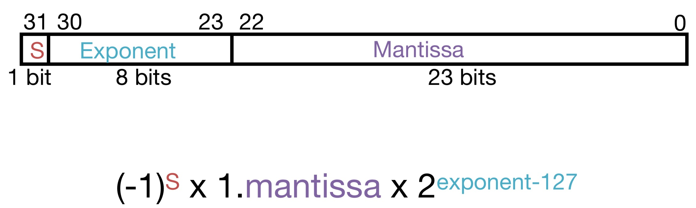
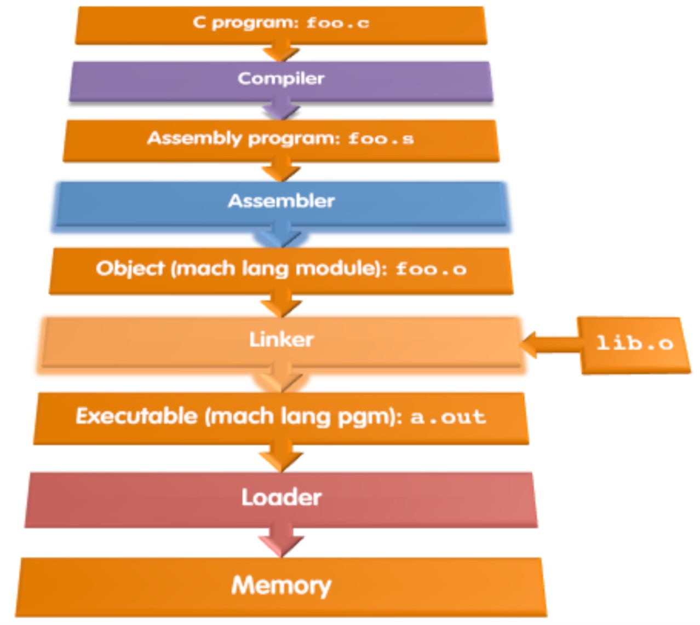
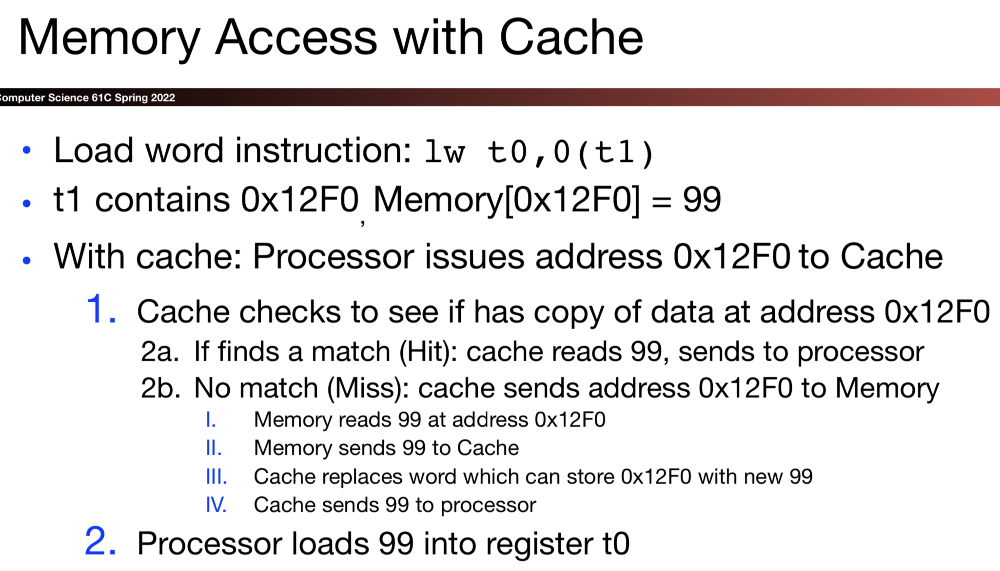
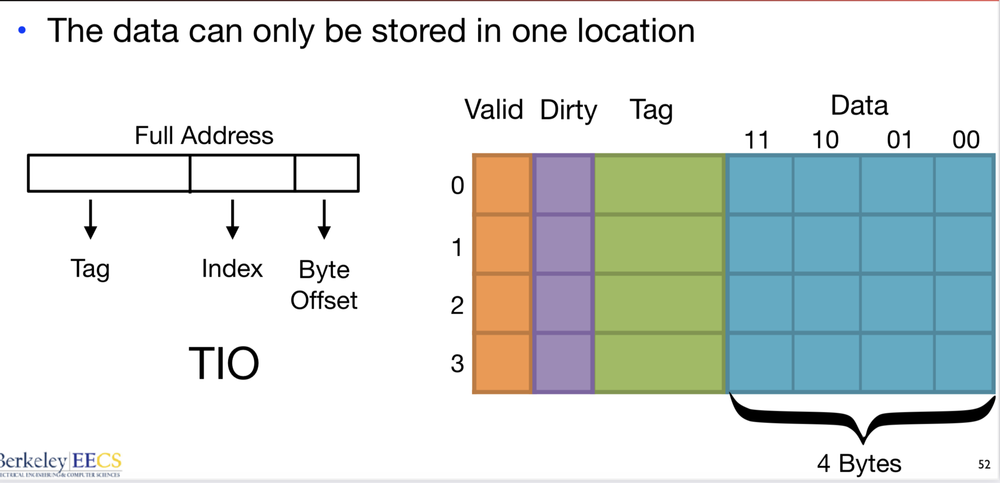
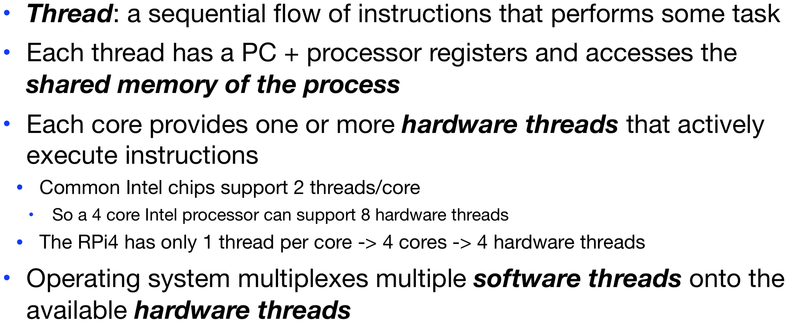
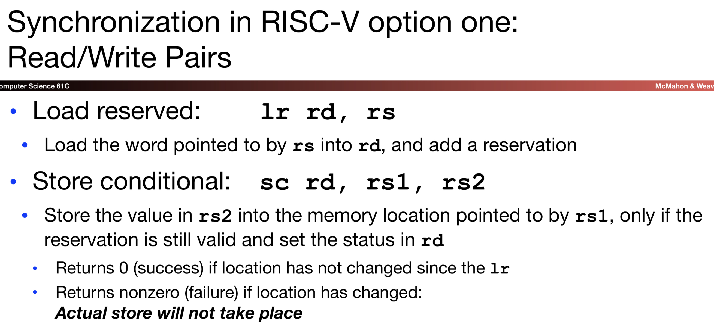

The five great ideas in Computer Architecture:

Content:
One of my favorite courses I have ever taken. I really began to understand the inner workings of a computer. This class helps to demystify the hardware-software interface.
The five great ideas in Computer Architecture:
Abstraction(layers of representation/Interpretation
Moore's Law(designing through trends)
Principle of Locality(memory hierarchy)
Parallelism & Amdahl's law
Dependability vs Redundancy
Binary: a method of representing numbers using a string of 0s and 1s. The fundamental building block of a computer is a transistor which can only represent two values. Out of simplicity there two values are 0 and 1. Denote a binary number by prepending "0b" or appending a subscripted 2.
Terminology:
Bit: 1 binary digit, Nibble: 4 binary digits, Byte: 8 binary digits
Base: the number of different digits that a system has to represent numbers.
Most Significant bit(MSB): the bit in the highest position(typically furthest to the left).
Least Significant bit(LSB): the bit in the lowest position(typically furthest to the right).
Not leading zeros don't change the value.
Binary Addition/Subtraction: same as elementary stack on top of each other addition. Overflow occurs when you cannot represent the result of the operation in the given number of bits.
With n binary digits(bits) we can represent 2^n values/things. If our range starts at 0 then we can represent [0,2^n - 1] values.
Conversion(Binary to Decimal | Decimal to Binary):

Hexadecimal: method of representing binary that's easier for humans to read, base 16. One hex digit can represent 16 numbers. One hex digit = 1 nibble.
With n hex digits(4 bits) we can represent 16^n values. If our range starts at 0 then we cna represent [0,16^n - 1] values.
Denote a hexadecimal value by prepending "0x" or appending a subscripted 16.
Conversion:


We need a way to represent negative values. This scheme does just that:
The MSB represents the sign of the value: 0 for positive and 1 for negative. The remaining bits represent the magnitude of the number.
Example: -5
Sign: 1 | Magnitude: 0101 thus the answer = 10101
Range of Sign and Magnitude: Recall the range or unsigned representation is [0,2^n - 1]. We can represent this range minus one bit for the sign in both positive and negative values thus [-(2^(n-1) - 1), 2^(n-1) - 1].
There are problems with Sign and Magnitude. There are two zeros since we can have negative and positive zero this doesn't make any sense. This makes it difficult to implement in hardware.
To eliminate the two zeros we face in the Sign and Magnitude representation we implement Two's Complement.
To represent the negative value take the positive value flip the bits and add one.
Range of Two's Complement: We shifted the negative values over by one, eliminating the negative zero, and meaning that we can represent one more negative value. Thus we have [-(2^(n-1), 2^(n-1) - 1)] values.
Two's Complement Addition/Subtraction: works just at normal binary addition in this case for subtraction just add the two complement(negative value).
Two's Complement Overflow: when the result of an operation cannot be represented in the given number of bits. When adding two positive numbers overflow occurs when the result if negative. When adding two negative numbers, overflow occurs when the result is positive. Overflow will never occur when adding two numbers of opposite signs.
Examples:

A method for storing a range or values where the lowest value is encoded as all zeros.
Bias Encoding Convention: non-biased -> bias then subtract the bias | bias -> non-biased add the bias
Bias Formula for 2's Complement number with n bits: N = -(2^(n-1) - 1)

"C is not a "ver high-level" language, nor a "big" one, and is not specialized to any particular are of application. Buts its absence of restrictions and its generality make it more convenient and effective for many tasks than supposedly more powerful languages" -Kernie and Ritchie. Enabled the first operating system not written in assembly language: UNIX - a portable OS.
In C programs that allow us to exploit underlying features of architecture(memory management, etc) adn do it in a portable way(C compilers universally available for all existing processor architectures).
Must declare the type of data a variable will hold, the type of data a function will return, the type of data arguments are, and declare functions(usually in a separate header file).
Variable Declarations: All variable declarations must appear before they are used. All must be at the beginning of a block. A variable may be initialized in its declaration.
C only guarantees minimum and relative size of "int" "short" etc. If you need to know the exact size specify with uint8_t(8 bit unsigned integer) or int64_t(64 bit integer) etc.
Constant is assigned a typed value once in the declaration; value can't change during the entire execution of program.
Structs are structured groups of variables with type. Stucts allocate enough memory and padding for all said parameters.
Unions are structure groups of variables with type, but the memory allocated is for the largest type in the union. Essentially one var is active in a union.
Control Flow: very similar to Java. if-else, while, for, switch, goto.

An address refers to a particular memory location aka it points to a memory location.
Pointer: a variable that contains the address of a variable.
C as well as Java pass basic parameter "by value" we can use pointers to pass "by reference".
Important to Pointer Arithmetic is the compile time operation sizeof() takes an arg such as char; sizeof(structtype)
You can cast basic C types.
In C Array variable is simply a "pointer" to the first (0th) element. Os array variables are almost identical to pointers: char *string and char string[] are nearly identical declarations. Thus a[i] == *(a+1). Note an array is passed to a function as a pointer so the array size is lost so we must pass the size with it.
C strings are just arrays of chars: char string[] = "abc". Last character is always followed by a 0 byte(null terminator "\0"), the string length operator stops at this terminator and does not include it in the length it returns.
To get arguments to the main function use: int main(int argc, char *argv[])
agrc: contains the number of strings on the command line
argv: pointer to an array containing the arguments as strings


If declared outside a function allocated in "static" storage.
If declared inside the function, allocated on the "stack" and freed when function returns(Note main() is treated like a function).
For both of these types of memory the management is automatic: no need to deallocate when no longer using, but a variable DNE once a function ends.
Every time a function is called, a new "stack frame" is allocated on the stack.
Stack frame includes: return addresses, arguments, space for local variables.
Stack frames use contiguous blocks of memory; stack pointer indicates start of stack frame. When function ends stack pointer moves up; frees memory for future stack frames.
C functions for heap management:
malloc(): allocate a block of uninitialized memory
calloc(): allocate a block of zeroed memory
free(): free previously allocated block of memory
realloc(): change size of previously allocated block(Note block may move and will not update pointers pointing to the same block of memory)
Code and static storage are easy: they never grow or shrink
Stack space is relatively easy: stack frames are created and destroyed in last-in, first-out order(LIFO)
Managing the heap is tricky: memory can be allocated/deallocated at any time
If you forget to deallocate memory: "Memory Leak"(program will eventually run out of memory)
If you call free twice on the same memory: "Double Free"(possible crash or exploitable vulnerability)
If you use data after calling free: "Use after free"(crash or exploitable vulnerability)
Examples:
Failure to free allocated memory. Remember to free memory upon function return or don't loose the pointer to memory in a callee function then you won't be able to free the memory.
Writing off the end of arrays.
Returning pointers up into the stack. Say a callee returns an array what was declared in itself. Then jumping back up the stack that array will eventually be overwritten.
Trying ti access memory that has been freed likely won't be the same memory and get incorrect results.
Free the wrong stuff, freeing things that weren't malloc'd. Or double freeing something.
These are the default alignment(centered around a "32b architecture": integers and pointers are 32b values):
char: 1 byte, no alignment needed when stored in memory.
short: 2 bytes, 1/2 word aligned
int & pointers: 4 bytes, word aligned
We have the boolean operations:
|| := boolean or
&& := boolean and
We have the bitwise operations:
Treat the data as raw bits and apply them on a bit by bit bases.
| := bitwise or, Ex: 0b0011 | 0b0101 = 0b0111
& := bitwise and, Ex: 0b0011 & 0b0101 = 0b0001
^ := bitwise xor, Ex: 0b0011 ^ 0b0101 = 0b0110
We have the bit shift operations:
a << b := shift the value in a to the left by b bits, shifting in 0.
Equivalent to multiplying by 2^b
0b00101 << 2 = 0b10100(Note bits off the left are dropped)
a >> b := shift the value in a to the right by b bits.
If a is signed we sign extend(copy MSB)
Ob10100 >> 2 = 0b11101
If a is unsigned we zero extend
0b10100 >> 2 = 0b00101
Note this is not quite the same as dividing by 2^b due to rounding.
Standard arithmetic for all computers(important because computer representation of real numbers is approximate).
Keep as much precision as possible.
Help programmer with errors in real arithmetic(infinity, NaN, exponent overflow, etc)
Keep encoding such that it is somewhat compatible with two's compliment.

Mantissa: In normalized form there must be one non-zero number to the left of the point, in binary the only non-zero number is 1 so every binary number written in normalized form will have 1 to the left of the point(except 0). We can save a bit by not storing this 1.
Exponent: Is written in biased notation so that the smallest number is written as all zeros. The range is [-126,127]. The exponent is biased by adding 127 to get the number into the range [1,254]; 0 and 255 have special meanings.(Note we bias the exponent so comparisons are easier because you can just perform an unsigned comparison). For IEEE-754 32 bit floating point numbers there are 8 exponent bits: Bias = -(2^(8-1) - 1) = -127
Range of floating point: Positive: [2^-126, (2 - 2^(-23) * 2^127)] Negative: [-(2 - 2^-23) * 2^127, -2^(-126)]

Floating Point Step Size:
If x is the biased exponent and y is the significand; how do we write our current number in terms of x and y?
(1 + y) * 2^(x-127)
How do we write the next number in terms of x and y?
(1 + y + 2^(-23)) * 2^(x-127)
So Step Size = next_num - current_num: (1 + y + 2^-23) * 2^(x-127) - (1 + y) * 2(x-127) = 2^(x-150)
The step size increases by a factor of 2 every time the exponent increases by 1.
Denormalized Numbers: The gap between 0->(smallest positive number) = 2^-126 but the gap between 2^-126->(the next smallest positive number) = 2^-149. Denormalized numbers allow us to get closer to zero. An exponent field of all zeros encodes a denormalized number.

Range of Denormalized Floating Point: Positive[2^-149, 2^-126 - 2^-149] Negative[-(2^-126 - 2^-149), -(2^-149)]
Denormalized Floating Point Step Size: The step size is the same for all denorm values because the exponent stays constant: 2^-149.
Rounding issues will occur:
Round to Nearest: round to nearest number; if the number falls midway it is rounded to the nearest value with an even(zero) least significant bit, which means its rounded up/down 50/50 percent.
Round toward 0: truncate
Round toward positive infinity: round up always.
Round toward negative infinity: round down always.
Floating Point addition is not associative
Assembly Language: Basic job of a CPU: execute instructions one after another in sequence, each instruction does a small amount of work.
Different CPU's implement different sets of instructions. The set of instructions that a particular CPU implements is called its Instruction Set Architecture(ISA).
RISC(Reduced Instruction Set Computer): A single instruction can only perform one operation. Keep the instruction set small and simple, makes it easier to build fast hardware. Philosophy developed by Cocke IBM, Patterson, Hennessy, 1980s


Unlike high-level languages like C or Java assembly languages do not use variables. Instead they use registers, small storage units that are located in the processor. Operations are performed on registers. Registers are extremely fast due to their location and size.
Notes: 32 registers in RISC-V, word = 32 bits, Register FIle: the general purpose registers inside of the processor.
Registers are numbered from 0 to 31; referred to as x0-x31. x0 always holds the value 0. Registers have no type.

Each RISC-V is 32 bits wide, its broken down into different field in an order corresponding with its respective instruction type format.
opcode: partially specifies which instruction it is.
funct7+funct3: combined with opcode, these two fields describe what operation to perform.
See Green Card for specificities.

See green card for function specificities.
Shifting:
Shift Left Logical:
Shift left by a register value
sll x10, x11, x12 #x10 = x11 << x12
Shift left by a constant value:
slli x10, x11, 2 #x10 = x11 << 2
Shifting left the left bits fall off and zeros are inserted on the right. Left shifting by n is equivalent to multiplying by 2^n.
Right Shift Logical:
shift right by register value or immediate: the bits on the right fall off and zeros are inserted on the left.
srl|i x10, x11, x12/2 #x10 = x11 << x12|2
Right Shift Arithmetic:
shift right by register value or immediate: the bits on the right fall off and the bits are sign extended.
sra|i x10, x11|2, x12 #x10 = x11 >> x10|2
Right shifting positive numbers and even numbers is equivalent to dividing by 2^n with the factional part of the result being truncated. Right shifting by negative odd numbers is equivalent to dividing by 2^n and rounding the result towards negative infinity.
Branching:
Branch instructions change the control flow of the program. There are two types of branch instructions: conditional and unconditional.
Labels are used to give control flow instructions a place to go.
Note blt and bge perform signed comparisons of the numbers. To perform unsigned comparison use bltu and bgeu.
Program Counter: is a register that holds the memory address of the instruction being executed.
When we jump to a function we need a return address use jal rd, label(rd=register where the return address will be stored). When we jump because of a loop or branch we don't need a return address we can use jal x0 label == j label. Note label is a 20 bit offset so we cannot jump everywhere in memory, so we have another instruction: jalr rd, rs, imm(rd=register where return address is stored, rs=register containing the base address, imm=immediate value to be added to the base register, PC=rs+imm. Conditional branch instructions have a limited range of +- 2^10 32 bit instructions. J format branch instructions have a range of +- 2^18 32 bit instructions. JALR branch instructions have a range of 2^12 instructions.
When we call another function, we assume the registers are overwritten. If the caller register are need for future use we have to save them into the stack. Calling convention delegates that the caller save temporary registers and the callee saves saved registers.
PC Relative Addressing: jump to a location based on the current location of the PC: PC + offset.
PC Absolute Addressing: jump to a location using that locations full address. LUI and AUIPC can be used to jump via PC relative or absolute addressing.

Interpreter: Directly executes a program in the source code. Its generally easier to write an interpreter. Interpreter closer to high-level so it can give better error messages. Interpreter is slower, code smaller. Interpreter provides instruction set independence: run on any machine.
Translator: Converts a program from the source language to an equivalent program in another language. Translated/Compiled code almost always more efficient and therefore higher performance. Compiled code does the hard work once: during compilation.

Compiler:
Input: high level language code(e.g. foo.c)
Output: assembly language code(e.g. foo.s for RISC-V)
Steps in Compiler:
Lexer: turns the input into "tokens" recognizes problems with the tokens
Parser: turns the tokens into an "Abstract Syntax Tree", recognizes problems in the program structure
Semantic Analysis and Optimization: checks for semantic errors, may reorganize the code to make it better
Code Generation: output the assembly code
Next we move to the Assembler
Assembler(a dumb compiler for assembly language):
Input: Assembly Language Code (e.g., foo.s)
Output: Object Code, information tables
Reads and Uses Directives(directives: give directions to assembler but do not produce machine instructions: .text,.data,.globl sym,.string str,.word w1...wn)
Replace Pseudo-instructions
Produce Machine Language rather than just Assembly Language
Linker:
Input: Object code files with information tables(e.g. foo.o, libc.o)
Output: Executable code(e.g. a.out)
Enable separate compilation of files(changes to one file do not require recompilation of the whole program)
Combines several objects (.o) files into a single executable
Step 1: take text segment from each .o file and put them together
Step 2: take data segment from each .o file, put them together and concatenate this onto end of text segments.
Step 3: resolve references(go through relocation table) aka fill in all absolute addresses
Resolving References:
Linker assumes first word of first text segment is at address 0x04000000
Linker Knows: length of each text and data segment, ordering of text and data segments
Linker Calculates: absolute address of each label to be jumped to and each piece of data being referenced
To Resolve References: search reference(data or label) in all "user" symbol tables, if not found search library files, once absolute address is determined fill in the machine code appropriately
Thus we have our outputted executable file containing text, data and a header.
Loader:
Input: Executable Code(e.g. a.out)
Output: program is run
Executable files are stored on disk. When one is run, loader's job is to load it into memory and start it running.
In reality, loader is the operating system(OS): loading is one of the OS's tasks, and these days the loader actually does a lot of then linking.
Step 1: Reads executable file's header to determine the size of text and data segments.
Step 2: Creates new address space for program large enough to hold text and data segments along with a stack segment.
Step 3: Copies instructions and data from executable file into the new address space.
Step 4: Copies arguments passed to the program onto the stack.
Step 5: Initializes machine registers(most registers cleared but stack pointer assigned address of 1st free stack location).
Step 6: Jumps to start-up routine that copies program's arguments from stack to registers & sets the PC.(if main routine returns, start-up routine terminates program with the exit system call.)
Simple Case: arithmetic, logical, shifts, etc instructions. All necessary info is within the instruction already, so just convert into the binary representations.
What about branches? PC Relative, so once pseudo-instructions are replaced by real ones we know by how many instructions to branch. So these can be computed. "Forward Reference" problem: branch instructions can refer to labels that are "forward" in the program. This is solved by taking 2 passes over the program, and remembering the address of the labels.
What about jumps(j and jal)? Jumps within a file are PC relative and thus can be computed. Jumps to other files we can't.
What about references to static data? la(load address) gets broken up into lui or auipc and addi. These will require the full 32 bit address of the data: auipc when we include into a relocatable block, lui when we have an absolute address. These can't be determined yet so we create two tables.
Symbol Table:
List of "items" in this file that may be used by other files. Includes- labels:function calling, data:anything in the .data section; variables which may be accessed across files.
Relocation Table:
List of "items" this file needs the address of later. Includes- any external label jumped to(including library files), any piece of data in the static section(such as the la instruction)
Object File Format:
object file header: size and position of the other pieces of the object file
text segment: the machine code
data segment: binary representation of the static data in the source file
relocation information: identifies lines of code that need to be fixed up later
symbol table: list of this file's labels and static data that can be referenced
debugging information
PC-Relative Addressing(beq, bne, jal): never relocate
External Function Reference(usually jal): always relocate
Static Data Reference(often auipc and addi): always relocate
Compiler converts a single HLL file into a single assembly language. Assembler removes pseudo--instructions, converts what it can to machine language, and creates a checklist for the linker(relocation table). A .s file becomes a .o file. Note the Assembler does two passes to resolve addresses, handling internal forward references. Linker combines several .o files and resolves absolute addresses. Enables separate compilation, libraries that need not be compiled, and resolves remaining addresses. Loader loads executable into memory and begins execution.
Digital: all values are discrete; a value can either be on(1) or off(0).
Analog: a continuous range of values.
The building blocks of digital circuits(AND, OR, XOR, NOT, NAND, NOR, XNOR)

A branch of algebra in which the operands can only be 0 or 1, with the basic operations composed of AND, OR, and NOT.

Example: an adder
Carries out arithmetic and logical operations on integer binary numbers.
Multiplexor: selects an input to propagate to the output, out = A~S + BS.
Combinational Logic: As soon as the inputs are available, the output starts being computed. Output depends only on the current input.
Sequential Logic: Synchronized with a clock signal and output depends on a combination of inputs and previous states.
Synchronous: all operations are coordinated by something called a clock.
Clock Signal: oscillates between a high and low state; period: time between one rising edge to the next rising edge; frequency: 1/period. Unit for frequency is Hertz(Hz), a common clock frequency is 4GHz(the clock goes through 4 billion cycles every second and period = 1/4GHz or 0.25 ns)
Flip-Flops: state element(a circuit component that can hold a value), can be either asynchronous(independent of the clock) or synchronous(dependent on the clock).
D Flip-Flop: rising edge triggered(stores D to Q the instant the clock goes from 0 to 1) or falling edge triggered(stores D to Q the instant the clock goes from 1 to 0)
Clock-to-Q Delay: The amount of time that it takes for the input to propagate to the output after the clock trigger.
Set-up Time: The amount of time that the input needs to be stable before the clock trigger.
Hold Time: The amount of time that the input needs to be stable after the clock trigger.
Max Hold Time: The amount of time that it takes for the input to B to change after the trigger(clk-to-q delay of register A + combinational logic delay).
Combinational Logic Delay: The amount of time that it takes for a value to propagate through the combinational logic.
Minimum Clock Cycle(critical path): The time it takes for the input of one state element to reach the input of the next state element(clk-to-q delay + longest combinational delay + setup time).
So the question "How to store a 32 bit number?" Put 32 flip flips together and thus a register(state element) is formed. A register has an extra input Write Enable which when 0 the contents of the register stay the same but when 1 the contents of the register are updated on the clock trigger.

Metal Oxide Semiconductor Field Effect Transistor: three terminals(source = input, gate = controls whether the witch is open or closed, Drain = output )
nFET vs pFET Transistors:
nFET: g=1 switch is closed | g=0 switch is open
pFET: g=0 switch is closed | g=1 switch is open

nFETs are not good at passing 1s so we usually hook up the source of an nFET to a 0. pFETs are not good at passing 0s so we usually hook up the source of a pFET to 1.
Uses complementary and symmetrical pairs of p-type and n-type MOSFETs to build logical functions. Consists of a pull-up and pull-down network.
We can construct our boolean gates with CMOS transistors.
CMOS Inverter:


Transistors are not perfect switches; the leak when off and have finite resistance when on.
All circuits nodes have capacitance; to change their voltage level must displace charge.
This cause a water bucket analogy where the capacitors a filled or drained in time not instantly. Consequences: every logic gate has a delay from input change to output change, for cascaded gates delay accumulates.

CMOS circuits use electrical energy.
Energy is the ability to do work(joules)
Power is the rate of expending energy(watts)
Energy Efficiency: energy per operation
E = 1/2 * C * V^2
P = 1/2 α C * V^2 * F(α=activity factor, C=total chip capacitance, F=clock frequency).
Power proportional to F, reducing frequency will reduce power. But that doesn't improve energy efficiency(just spread computation over longer time).
Energy Efficiency: E ∝ V^2 but τ ∝ V; therefore by lowering supply voltage energy efficiency is lowered, make up for less performance by using parallelism.
To build a complete processor two things are needed: the datapath that implements the computation and the control logic that looks at the instruction and tells the datapath what to do. Think of this setup like a Marionette; the puppet being the datapath and the strings being the control logic.
Each instruction reads and updates this state during execution:
Registers(0x...x31):
Register file Reg holds 32 registers x 32 bits/register: Reg[0]...Reg[31]
First register read specified by rs1 field in instruction. Second register read specified by rs2 field in instruction. Write register specified by rd field in instruction.
x0 is always 0.
Program Counter(PC):
Holds address of current instruction.
Memory(MEM):
Holds both instructions and data, in one 32--byte-addressed memory space. To help with abstraction memory for instructions and data was separated in the course. Instructions are read from IMEM(instruction memory-read_only). Load/store instructions access data memory.
There are five basic phases of instruction execution:
Instruction Fetch: Send address to the instruction memory (IMEM), and read IMEM at that address.
Instruction Decode: Generate control signals from instruction bits, generate the immediate, and read registers from the reg file.
Execute: Perform ALU computations, and do branch comparisons.
Memory: Read from or write to the data memory(DMEM).
Writeback: write back either PC + 4, the result of the ALU operation, or data from the memory to the Reg file.

I-Format Immediate: high 12 bits of instruction(inst[31:20]) copied to low 12 bits of immediate(imm[11:0]). Immediate is sign extended by copying value of inst[31] to fill the upper 20 bits of the immediate value.
I & S Immediate Generator: Just need a 5-bit mux to select between two positions where low five bits of immediate can reside in instruction. Other bits in immediate are wired to fixed positions in instruction.
B Format: mostly the same as S-Format with two register sources (rs1/rs2) and a 12-bit immediate. But now immediate represents values --4096 to +4094 in 2 byte increments. The 12 immediate bits encode an even 13 bit signed byte offset(lowest bit of offset is always zero so no need to store it).
Branch Comparator: BrEq = 1, if A=B | BrLt = 1, if A < B | BrUn = 1 selects unsigned comparison for BrLt, 0=singed. | BGE branchL A>=B if ~(A < B)
Jal Instruction: sets PC = PC + offset; target somewhere within +- 2^19 locations, 2 bytes apart. Or +- 2^18 32 bit instructions.
Capable of executing all RISC-V instructions in one cycle each. Datapath is the "union" of all the units used by all the instructions. Muxes provide the options. Not all units(hardware) used by all instructions. 5 phases of execution and not all instructions are active in all phases. Controller specifies how to execute instructions.
Tells universal datapath how to execute each instruction.
ROM(read-only Memory):
Regular structure made from transistors. Cna be easily reprogrammed during the design process to fix errors or add instructions. Popular when designing control logic manually. An address decoder is used to access the ROM.
Combinatorial Logic: Today, chip designers often use logic synthesis tools to convert truth tables to networks of gates. Logic equations for each control signal. Can exploit output "don't cares" and input "for all values" to simplify circuit.
At the current moment we have our datapath incrementing along the 5 stages processing 1 instruction. Essentially 4/5 phases of the datapath are unused while one is working. We can optimized this with a factory line approach.
Performance Measures:
Latency: instruction execution time
Throughput: total number of instructions executed per unit time
Energy Efficiency: energy per instruction, e.g. how many total instructions executed per batter charge
"Iron Law" of Processor Performance:

Instructions per Program: Determined by task specification, algorithm, programming language, compiler, and Instruction Set Architecture.
(averg)Clock Cycles per Instruction: Determined by Instruction Set Architecture(CISC vs RISC), processor implementation, pipelined processors(CPI > 1), superscalar processors(CPI < 1).
Time per Cycle: Determined by processor microarchitecture, technology, supply voltage(lower voltage reduces transistor speed but improves energy efficiency).
Note: Energy per task can also be written as C*Vdd^2 where "C" is the capacitance depending on technology, microarchitecture, circuit details and Vdd is the supply voltage.
Energy "Iron Law":
Energy efficiency is a key metric in all computing devices. For power constrained systems need better energy efficiency to get more performance at same power. For energy constrained systems need better energy efficiency to prolong batter life.
Performance(tasks/second) = power(Joules/sec) * energy efficiency(tasks/Joule)
Pipelining: is the process of implementing task completion in parallel, instead of limiting task completion to sequentially occur. Pipelining increases throughput but can never improve latency(sometimes decreases).
Pipeline registers separate stages, and hold date for each instruction in flight. Control signals derived from instruction, as in single cycle implementation. Information is stored in pipeline registers for use by later stages.
Multiple tasks operating simultaneously using different resources. Potential speedup = Number pipe stages. Time to "fill" or "drain" pipeline reduces speedup.
Pipelining Hazards:
Structural, Data(R-type/load instructions), and Control are all hazard types.
Structural Hazard: Two or more instructions in the pipelining compete for access to a single physical resource. Solution 1- Instructions take turns to use resource, some instructions have to stall. Solution 2- Add more hardware to machine.
Reg File Structural Hazards: Each instruction can read up to two operands in decode stage. Can write one value in writeback stage. Therefore two different instructions might be accessing the register file on the same cycle. Avoid structural hazards by having separate ports. Read from one instruction and writes from another happens simultaneously.
Memory Structural Hazard: Instruction and data memory used simultaneously. Caches: relatively small and fast "buffer" memories. Solution use two different cache memories.
Summary: Conflict for use of resource. IN RISC-V pipeline with a single memory: load/store requires data access, without separate memories instruction fetch would have to stall for that cycle. Pipelined datapaths require separate instruction/data caches. Multi-ported register file. RISC ISAs (including RISC-V) designed to avoid structural hazards.
Data Hazard: Instruction dependent on data that causes issue.
R-type Instruction: Instruction depend on result from previous instruction. Solution 1- bubble and stall the dependent instruction, stalls reduce performance, compiler could try to arrange code to avoid hazards and stalls but this requires code compiler understanding. Solution 2- forwarding(bypassing): grab operand from pipeline stage, rather than register file, requires additional connections in the datapath. To detect a need for forwarding compare destination register of older instructions in pipeline with sources of new instruction in decode stage. Thus we can use a previous result of an add in the next clock cycle.
Load Instruction: Trying to compute upon a value that is being loaded from memory, 1 cycle stall unavoidable. We stall, and repeat and instruction and forward. Slot after a load is called the load delay slot, if that instruction uses the result of the load then the hardware will stall for one cycle, equivalent to inserting an explicit nop. Put unrelated instruction into load delay slot. We reorder instruction so that the lw values are used directly following aka microarchitecture optimization.
Control Hazard: two instructions executed following a branch instruction regardless of branch outcome because its down stream. Solution 1- if branch not taken then instructions fetched sequentially after branch are correct, if branch or jump taken, then need to flush incorrect instructions from pipeline by converting to NOPs. Every taken branch in simple pipeline costs 2 dead cycles. To improve performance, use “branch prediction” to guess which way branch will go earlier in pipeline. Only flush pipeline if branch prediction was incorrect. Branch Prediction: Keep a branch prediction buffer/cache: Small memory addressed by the lowest bits of PC. During instruction decode, if branch: Look up whether branch was taken last time? If yes, compute PC + offset and fetch that (or store actual branch target address from last time). If no, stick with PC + 4. If branch hasn't been seen before: assume forward branches are not taken, backward branches are taken. Update state on predictor with results of branch when it is finally calculated. Jumps are never mispredicted... but JALR can be.
Increasing single Processor Core Performance: increase clock rate, deeper pipeline, multi-issue "superscalar" processor.
Multiple issue "superscalar":
Replicate pipeline stages => multiple pipelines
start multiple instructions per clock cycle
CPI > 1, so use instructions Per Cycle(IPC)
"out of order execution": Reorder instructions dynamically in hardware to reduce impact of hazards
Don't just have one super-scalar processor core, have multiple!
Past approach: Take your best single-core and replicate it...Problem: Those superscalar beasts consume a huge amount of energy.
New approach: Big/Little...Some of your processor cores are the single-core beasts, Some are a more energy-optimized design, When absolute performance isn't needed, run tasks on the energy-efficient cores.
RISC-V ISA designed for pipelining:
All instructions are 32-bits in the RV-32 ISA(Easy to fetch and decode in one cycle), Few and regular instruction formats(Decode and read registers in one step), Load/store addressing(Calculate address in 3rd stage, access memory in 4th stage, great for 5 stage pipeline), Alignment of memory operands(Memory access takes only one cycle).
Apple M1 Processor:
Mismatch between processor and memory speeds leads us to add a new level... introducing a "memory cache". Usually on the same chip as the cpu, faster but more expensive then DRAM. Cache is a copy of a subset of main memory. Most processors have separate caches for instructions and data.
Memory hierarchy:
Cache contains copies of data that are being used. Caches work on the principles of temporal and spatial locality:
Temporal Locality- if use it now chances are that we'll want to use it again soon. Keep most recently accessed data items closer to the processor.
Spatial Locality- if we use a piece of memory chances are we'll use the neighboring pieces. Move blocks consisting of contiguous words closer to the processor.
Memory Access with/without Caches:

Cache Hit: the data you were looking for is in the cache, retrieve the data from the cache and bring it to the processor.
Cache Miss: the data you were looking for is not in the cache, go to the memory and put the data in the cache, then bring to the processor.
Hit Rate: number of hits/number of accesses
Miss Rate: 1- hit rate
Hit Time: the time that is takes for you to access an time on a cache hit
Miss Penalty: on a miss the time it takes to access the block after discovering that ts not in cache.
Fully Associative Cache:
Cache line/block: a single entry in the cache, each line has its own entry
Line size/block size: the number of bytes in each cache line
Tag: identifies the data stored at a given cache line
Valid Bit: tells you fi the data stored at a given cache line is valid
Capacity: the total number of data bytes that can be stored in a cache
Handling Stores: Store instructions write to memory, changing values, need to make sure cache and memory have consistent information.
Write Through: write to the cache and memory at the same time, the write to memory takes longer. Write Back: write data in cache and set the dirty bit to 1, when this line gets evicted from the cache write it to memory.
Write-allocate: on a write miss, you bring the line into the cache and then update the line. No Write-allocate: on a write miss, don't bring the line into the cache, you only update memory. For both you always bring the line in on a read miss. Common Combinations: write through and no write-allocate, or wite back and write allocate.
Hardware Implementation: Need a comparator for each row in the cache to check the tag.
Direct Mapped Caches:
Go to the index, check the tag and compare then load or store.


Set Associative Caches:
Compromise between fully associative and direct map cache.
The data can only be stored at one index but there are multiple slots to store it in.The LRU bit indicates which set was least recently used.
Eviction Policies:
Least Recently Used: evict the line that was least recently used. A set includes all of the ways of that index, the LRU tells us which way is the least recently used in the set.
Approximate LRU(clock algorithm):
Each cache line has 1 referenced bit. This bit is set to 1 each time the line is accessed. When a line needs to be evicted we that at the first entry in the cache and check its reference bit. If 1, set to 0 and move on. Else choose as victim. The next time we need to evict a line from the cache we will start searching at the point where wee lest off.
Most Recently Used: evict the line that was most recently used.
Random: chooses a random line to evict, thus don't have to keep track of additional metadata.
Types of Misses:
Compulsory Miss: caused by first access to block that has never been in the cache.
Capacity Miss: caused when the cache cannot contain all the blocks needed during the execution of a program. Occur when blocks were in the cache, replaced, and later retrieved.
Conflict Miss: Occur in set-associative or direct mapped caches when multiple blocks compete for the same set.
Cache Summary:
Important to understand cache configurations/structure to design software that utilizes cache in an efficient way.
Cache Blocking: A technique where data accesses are rearranged to make better use of the data that is brought into the cache. Helps prevent repeatedly evicting and fetching the same data from the main memory.
Example: Matrix multiplication, transposing the second matrix to make cache accesses more efficient. For even better performance, use cache blocking take chunks of each matrix multiply and move on to the next chunk.
Measuring Cache Performance:
Hit Rate: number of hits / number of accesses
Miss Rate: 1 - hit rate
Hit Time: The time that it takes for you to access an item on the cache hit
Miss Penalty: On a miss, the time it takes to access the lock after discovering that its not in the cache
AMAT(average memory accesses time): hit time + miss rate * miss penalty
How does increasing Associativity Affect AMAT?
Hit time increases as associativity increases, because of the multiplexors, such that a 2 way associative set is more efficient then a 4 way set associative.
Miss rate decreases as associativity increases, because due to less conflict misses.
Miss Penalty Mostly unchanged, replacement policy runs in parallel with fetching missing line from memory.
How does increasing number of entries affect AMAT?
Hit time increases since reading tags and data from larger memory structures
Miss rate decreases due to increased capacity and fewer conflict misses
Miss penalty is unchanged
How does increasing block size affect AMAT?
Hit time mostly unchanged but might be slightly reduced as number of tags is reduced
Miss rate goes down at first due to spatial locality then increases due to increased conflict misses due to fewer blocks in the cache
Miss penalty rises
Another way to reduce miss penalty is to include another cache between processor and main memory. The L2 cache is bigger than L1, accessed only if the requested data is not found in L1. L2 takes longer to access because it is larger and further away from the processor. All data in L1 can be found in L2. If the line in L1 is dirty when evicted you update the copy in L2.
L1 Cache: embedded in processor chip, fast but limited storage.
L2 Cache: embedded in processor chip or on its own chip, reduces L1 miss penalty.
L3 Cache: on a separate chip, reduces L1 and L2 miss penalty.
L4 Cache: uncommon.
Hit Rate is thus differentiated into Local and global scales; local being hits at said level and global being total hits.
New AMAT = L1 hit time + L1 miss rate*(L2 hit time + L2 miss rate * L2 miss penalty) Note: similar convention follows for cascading caches.
CPU Clock rates are no longer increasing: technical & economic challenges; advanced cooling technology too expensive and energy cost are prohibitive. Thus, parallel processing is only path to higher speed.
Two Basic Approaches:
Multiprogramming: run multiple independent programs in parallel, easy.
Parallel Computing: run one program faster, hard.
Single Instruction/Single Data Stream(SISD): Sequential computer that exploits no parallelism in either the instruction or data streams. Examples of SISD architecture are traditional uniprocessor machines; our RISC-V processor.
Single Instruction/Multiple Data Stream(SIMD): SIMD computer processes multiple data streams using a single instruction stream, example Intel SIMD instruction extensions.
Multiple-Instruction/Multiple-Data Streams(MIMD): Multiple autonomous processors simultaneously executing different instructions on different data, example multicore and Warehouse-scale computers.
Multiple-Instruction/Single-Data Stream(MISD): Multiple-Instruction, Single-Data stream computer that processes multiple instruction streams with a single data stream, example historical significance.
Currently SIMD and MIMD are the most common parallelism architecture, usually both in the same system.
On high performance processors, optimizing compilers performs "loop unrolling" operation to expose more parallelism and improve performance.
Rearrange code to use values loaded in cache many times, only "few" accesses to slow main memory(DRAM) per floating point operation.
Strong Scaling: when speedup can be achieved on a parallel processor without increasing the size of the problem.
Weak Scaling: when speedup is achieved on a parallel processor by increasing the size of the problem proportionally to the increase in the number of processors.
Load Balancing: every processor doing same amount of work, e.g. one unit with twice the load of others cuts speedup almost in half.
SIMD(data parallel): a SIMD favorable problem can map easily to a MIMD type fabric. SIMD type generally offer a much higher throughput per dollar. Much simpler control logic, common approach is "vector" like.
MIMD(data-dependent branches): a MIMD favorable problem will not map easily to SIMD type fabric.
Only path to performance is parallelism. Key challenge is to craft parallel programs that have high performance on multiprocessors as the number of processors increase -i.e. that scale.

Processor resources are expensive and should not be left idle. Hardware switches threads to bring in other useful work while waiting for cache miss. Put in redundant hardware so don't have to save context on ever thread switch i.e. PC, registers.
"Big" processors are needed for both single threaded and multi-threaded performance, but such processors are very inefficient. Big_Lil designs "smaller" processors for idle and small tasks; "big" processors are used once the "small" can't keep up.
OpenMP is a language extension used for multi-threaded, shared memory parallelism. Portable, standardized and easy to compile(cc -fopenmp name.c). Create threads with markers, so that independent code blocks can be run at the same time.
Pros: takes advantage of shared memory, programmer need not worry about data placement. Compiler directives are simple and easy to use. Legacy serial code does not need to be written.
Cons: Code can only be run in shared memory environments. Compiler must support openMP. Amdahl's law is gonna get you after not too many cores...
Data Race: if different threads attempt to access the same location, and at least one is a write,, and they occur one after another. Avoid data races by synchronizing writing and reading to get deterministic behavior.
Lock synchronization: use a "lock" to grat access to a region(critical section) so that only one thread can operate at a time. Processors read lock and either wait or set lock and go into critical section; 0-unlocked 1-locked. Check the lock, if unlocked set lock and access critical section then unset lock; else idle till unlocked or go do another process until unlocked.
To build a lock hardware support is needed; Atomic read/write memory operation. Single inst- atomic swap of register <-> memory. Pair inst: one for read, one for write.
Deadlock: a system stat in which no progress is possible because everything is locked waiting for something else. Many solutions but typically program specific. Locks innately inhibit parallelism, so try and limit locks or eliminate.

Example: use OpenMp to break up a for loop, that has not loop dependency. If the loop is doing a sum operation splitting it up will require the reduction operation, each loop has its own sum varibale of which are combined after the parallel loops execute.

SMP(Shared Memory) Symmetric Multiprocessor:
Problems Arrise in data races, if one cache pulls data from main mem at X, then a second cache pulls the same data from main mem at X, then the first cache writes to memory X the second cache has stale data but how does it know that?
Coherency: keep cache values coherent. When any processor has caches miss or writes notify other processor via interconnection entwork. Write transactions from one processor, other caches "snoop" the common interconnect chec iing for tages they hold. We want write-back caches, we want to minimize writes overall. The neighboring processor's cache is faster to get to than main memory.
Common Cache Coherency Policy: MOESI
Shared: up-to-date data, other cahces may have a copy(valid bit set, shared bit set)
Modified: up-to-date data, changed(dirty) no other cache has a copy, OK to write, memory out-of-date(valid and dirty bit set)
Exclusive: up-to-date data no other cache has a copy, OK to write, memory up-to-date(valid bit set). If any other cache reads this line the state becomes shared, if I write this line sates becomes modified but I don't need to broadcast this when I do the write.
Owner: up-to-date data, other caches may have a copy, memory is not up-to-date(valid, dirty, and shared is set). This cache now supplies data on read instead of going to memory, when you write once again have to have the other caches invalidate.
Invalid: Invalid
Problem: Everyt time one processor does a write the other processor will take a cache miss on the next read or write...new class of cache miss type: coherency.
Language created at Google starting in 2007. Language continues to evolve but a commitment to backwarrds campatibilty.
The OS is the software that runs on a computer. It is the software that provides the hardware with the ability to perform tasks such as reading and writing to memory, executing programs, and managing the hardware. Common OS: Unix(Berkeley Software Distribution, macOS), Linux(Debian, Ubuntu, Red Hat), Microsoft Windows
Illusionist: The OS is divided up into threads to run mutliple processors at once. It provides clean, easy-to-use abstractions of physical resources. Masks limitations and abstracts higher level objects(files, sockets, etc.)
Referee: It manages protection, isolation and sharing of resources. The OS isolates processes from each other, OS isolates itself from other process, even though they are actually running on the same hardware.
Context Switch: the swithcing from executing one program to another. Allows multiple processes to run on the same processor. The OS determines when to context switch.
What Happens: The OS takes control of the CPU from the current process -> the OS saves the state of the current process -> the OS loads the state of the next process -> the OS hands over the CPU to the next process.
Hardware provides at least two modes: Kernel mode("supervisor" mode) and User mode
Certain operations are prohibited when running in suer mode: interacting directly with hardwared, writing to kernel memory.
OS mostly runs in user mode.
Switching between user mode and kernel mode: system calls, interupts, and exceptions.
System Call:
Allows the program to request a service from the operating system. Examples: creating and deleting files, reading and writing files, accessing external devices like a scanner, etc. Similiar to function calls except it's executed by the kernel.
Interupts:
Caused buy an event external to the current program. Example keyboard press or mouse click. Asynchronous to the current program; does not need to be handled immediatly but should be handled soon.
Exceptions:
Caused by an event during the execution of the current program. Example illegal intsruction, divide by zero. Synchronous to the current program; must be handled immediatly.
Trap Handler: code the services the interupt or exception; from the program's point of view it mus look like nothing happened.
Traps: all instruciton befor ethe faulting instruction must complete -> all instructions after the faulting instruction must be flushed -> the faulting instruction must be flushed -> executiong of the trap handler begins.
What it does: saves the state of the current program -> determine what caused the exxception or interupt -> handle the exception or interupt -> continue execution of the program: restoring the state of the program and returning the control to the program or terminate the execution of the program: free resources and schedule a new program.
ia is the faulting instruction we jump to the handler code who decides wether continuation or termination of the program is appropriate. Typically interupts and certain memory exceptions call for the contineued execution of the program, in contrast, illegal instructions and certain illegal memory accesses call for the termination of the program.
A program the exposes the operating system's services.
The BIOS(Basic Input Output System) runs the Power on Self Test(Post) and the bootloader -> the bootloader loads in part the operating system -> the operating system initializes services, drivers, etc -> launch a process that waits for an input in a loop
Bootstrapping: a chain of stages, in which at each stage, a smaller, simpler program loads and then execurtes the larger more complicated program of the next stage.
Loader: responsible for loading the program into memory.
The loader loads program into memory -> the loaders sets argc and argv -> the OS jumps to main and transfers control to the process